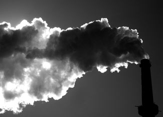

The Environmental Protection Agency (EPA) today officially declared that global warming emissions are pollutants that endanger public health and welfare. The move will allow the agency to regulate heat-trapping emissions from power plants and automobiles under the Clean Air Act.
Below is a statement from Eli Hopson, a Union of Concerned Scientists Washington representative:
“The EPA today officially acknowledged the massive body of scientific research that shows that climate change is harming our health and environment. Heat waves, the spread of tropical diseases, and worsening air quality are all climate-related threats the EPA can help address.
“The EPA needs to establish strong emission reduction policies that complement the energy and climate legislation we expect Congress to pass this year. At the same time, the federal government must allow states to pursue their own aggressive renewable energy and clean car policies.
“By working with Congress to ensure that strong standards are coupled with a comprehensive economy-wide cap on emissions, the Obama administration can ensure that we reduce the risks of global warming while saving consumers money.”
Background Information on the Endangerment Finding: The Bush administration refused to issue this endangerment finding despite the fact the Supreme Court directed it to do so. Political appointees ignored and deliberately suppressed scientific analysis from EPA scientists urging them to act.
The Clean Air Act allows the EPA to regulate major sources of global warming emissions. These sources include power plants and vehicles, which together generate more than half of the heat-trapping emissions produced in the United States.
|
 SENOR CODO/FLICKR The EPA finding subjects major sources of global warming emissions, such as power plants, to regulation under the Clean Air Act. |
|
|